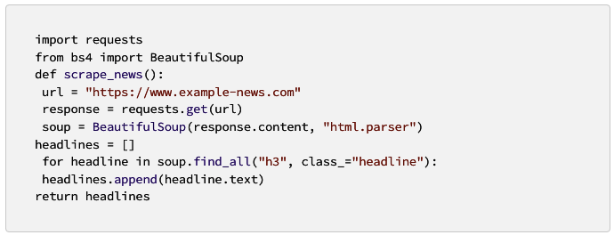
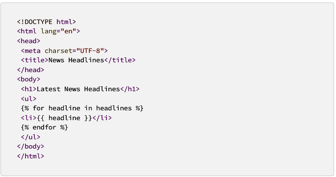

Web scraping refers to extracting data from websites programmatically. This article demonstrates how to build a simple web scraper using Python and Flask. With Flask’s micro-framework, we can create a straightforward web interface to display the data we gather. Here, we will scrape data from a sample news portal and display the headlines on our Flask web app.
Step 1: Set up your environment
Before getting started, ensure you have the following installed on your system:
- Python 3.8 or higher -Flask
- Requests
- Beautiful Soup
| S/N |
Name |
Install |
|
1
|
flask
|
pip install flask
|
| 2 |
Request |
pip install requests |
| 3 |
Beautifulsoup |
pip install eautifulsoup |
Install the necessary packages using pip:
pip install flask requests beautifulsoup4
Step 2: Creating a basic Flask app
Start with creating a folder for your project, then create a new file named `app.py`. Inside `app.py`, write a basic Flask app:
 Step 3:
Step 3: Design the scraping function
In this step, create a scraping function to fetch data from the example news portal, `https://www.example-news.com`. We’ll use the Requests library to send HTTP requests and Beautiful Soup for parsing the HTML.

Step 4: Integrating scraping function with Flask
Integrate the `scrape_news` function with your Flask app by calling it in the `home` route and passing the headlines to the `index.html` template.
@app.route("/")
def home():
headlines = scrape_news()
return render_template("index.html", headlines=headlines)
Step 5: Creating the HTML template
Create a new folder named `templates` inside your project folder and create a file named `index.html`. In this file, display the scraped headlines using Jinja2 templating:

Step 6: Testing the web scraper
Finally, test your web scraper by running the Flask application with the command `python app.py`. It will start the development server, and you can visit http://localhost:5000 in your browser to see the latest news headlines displayed in your app.
Conclusion:
In this article, we used Flask to build a web app that allows users to interact with a web scraper written in Python. This is just a starting point — with this foundation, you can build more complex applications, explore different sources of data, and customize your web app’s appearance and functionality. I just hope this will be of some help to developers who want to do web scraping.